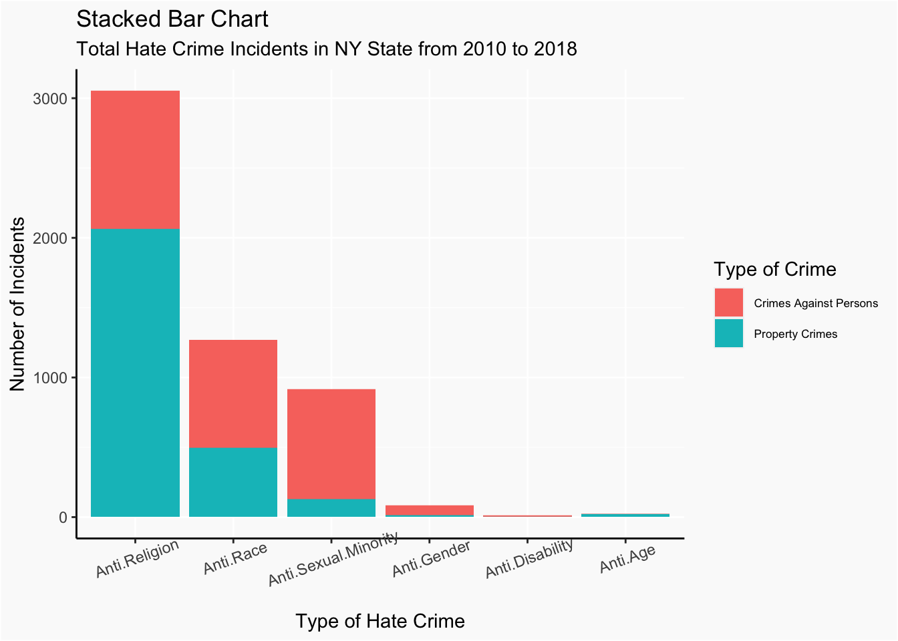
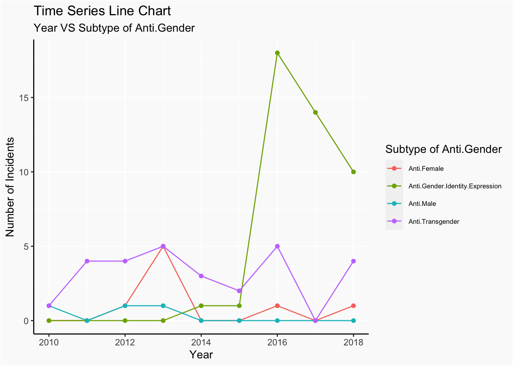

Chapter 5 Results
5.1 Question 1
 Hate Crimes are categorized into 6 sub-categories: Anti-Religion, Anti-Race, Anti-Sexual-Orientation, Anti-Gender, Anti-Disability and Anti-Age. The methods of crime are further categorize into two types: Crime against persons and property crimes. The bar chart gives us an overview of the relative frequency of each sub-categories of Hate Crimes. The most common type of hate crime is Anti-religion, and about one third of these crimes were conducted against property. The least common type of hate crime is Anti-Age, and it composes of almost entirely of property crimes. It is notable that unlike anti-religion hate crimes and anit-age hate crimes, crimes against persons are more common among other types of hate crimes. Anti-Sexual-Minority hate crimes are particularly high in proportion of crimes against persons.
What religions, races, gender.etc are most susceptible to Hate Crimes? We answer this questions by investigating into each sub-type of hate crimes. Within the Anti-Gender group, hate crimes against gender identity expression are of the most frequent.There’s very small number of hate crimes against male. There are only less then 30 incidences of Anti-Age hate crimes during the 9 year period from 2010 to 2018, and almost all are property crimes. Within the Anti-Race category, vast majority of the hate crimes are against African Americans. It is notable that anti-white hate crimes are ranked 2nd most frequent. Within the Anti-Religion category, vast majority of the hate crimes are against Jewish, within which, vast majority are crimes against property, rather than against persons. The total incidences of Anti-Disability crimes is also very small, with only one incident against property. Anti-Gay Male hate crimes are most common among the Anti-Sexual Minority group, and the majority of these crimes are against persons.
5.2 Question 2
After investigating the overall distribution of all kinds of hate crimes, we now consider the distribution of different types of hate crimes in different counties. That is, we want to know if for some certain type of hate crimes, the total number of incicents corresponding to it vary in counties or not. Also, it is worth checking whether the distribution in counties changes among various kinds of hate crimes. Here total number of incidents of some type of hate crimes includes the whole time period from 2010 to 2018 and both crime types which are person and property.
We draw a heatmap of total number of incidents in New York faceted by types of hate crimes.


Now we have six plots of heatmaps where each heatmap corresponds to a certain type of hate crimes.
First we can see that for Anti.Age, Anti.Gender and Anti.Disability, the maximum numbers of total incidents in each county are very small (less than 20), which means that these three types of hate crimes occur rarely in New York. On the other hand, for Anti.Race, Anti.Religion, and Anti.Sexual.Minority, the maximum numbers of total incidents in each county are rather large (150, 800 and 200), which means these three types of hate crimes might occur more frequently in New York compared to the other three types.
Next we examine each type of hate crimes in detail.
Regarding Anti.Age, almost every county has no incidents. There are only few counties with values around 3, and there are two counties which are located in the southeast corner of New York with values 6 and 12.
Regarding Anti.Gender, more counties have values greater than 0 compared to Anti.Age, which means that the Anti.Gender type might occur more frequently in New York. There is a county in the left side of New York and a county in the southeast of New York with a value around 8, and some counties in the middle of New York have values around 5, and a very small county in the southeast corner of New York has a value greater than 10, which should be noticed.
Regarding Anti.Race, almost every county has a value greater than 0. The county in the left side of New York which is mentioned exactly just now has the maximum value 150, and almost all counties in the southeast corner of New York have relatively large values.
Regarding Anti.Religion, almost all large values appear in the southeast corner of New York and most of the other counties have values around 0. Again, the very small county in the southeast corner of New York which is mentioned before has the maximum value 800. We can notice that values in all other counties are far less than 800.
Regarding Anti.Disability, the maximum value is just 3, which means this type occurs more rarely than Anti.Age and Anti.Gender. Almost every county has a value 0. Few counties in the left side of New York and some counties in the southeast of New york have values other than 0.
Regarding Anti.Sexual.Minority, a few counties have values other than 0. We can see that the very small county mentioned many times which is in the southeast side of New York has a maximum value 250. And almost all large values appear in the southeast corner.
In conclusion, for a certain type of hate crimes, the total number of incicents corresponding to it vary in counties. Also, the distribution in counties changes among various kinds of hate crimes. We have to pay attention to two areas: one is the county in the left side of New York which is mentioned more than once and the other one is the southeast corner of New York, as these two areas have many large values for more than one type of hate crimes.
There is a point that some counties in the heatmaps don’t have any value (or color). That is because in the original dataset, there is no data of these counties as the author has previously filtered out all missing values.Therefore, we don’t have to deal with missing values in the dataset.
5.3 Question 3
After examing the distributions of hate crimes in different counties, we know take time factor into consideration. In other words, we want to see if total incidents of each type of hate crimes vary cross time. And what’s more, we aim to integrate both county and time into the inspection of distribution of hate crimes in New York State.
5.4 Question 3
After examing the distributions of hate crimes in different counties, we know take time factor into consideration. In other words, we want to see if total incidents of each type of hate crimes vary cross time. And what’s more, we aim to integrate both county and time into the inspection of distribution of hate crimes in New York State.
First, we looked at the time trend of two types of crimes in the NY state. In order to draw the line chart, we calculated the numbers of two crime types in different years, without considering the counties and hate crime types. In addition, we also found out an index, which equals to the counts at each year divided by the counts at first year. By doing so, we are able to analyze the relative changes cross years and their overall time trend.

In the A plot, year versus the numbers of incidents of each crime type, it’s obvious to see that in 2010, the number of crime against persons is much higher than the number of crime against property. And as time goes on, the number of crime against persons starts to decrease and reaches its minimum in 2018, while the numbers of crime against property contains more flutuation. Number of crime against property reaches its maximum in 2012 and then begins to go down until 2015. In recent years, its number shows an increasing tendency.
In the B plot, we can see the time trend of two crime types in a clearer way as two lines are seperated due to the use of index. Similar conclusion is drawn as A plot: numbers of crime against persons are decreasing while the numbers of crime against property are going up with some cyclical trends. What’s new in this plot is that we are able to see the relative changes compared with 2010, not in an aboslute means as we did in A plot.
Next, let’s move on to exmaine on the time trend of hate crime types in NY state. Similar preprocessing procedure was done with the target data like the way we transformed in the crime type case.
From the C plot, we can say that Anti-Religion is the most common hate crime type from 2010 to 2018. It reaches its maximum in 2012 and for other years, it remains approximately at the same level. Anti-Race is the second common type of hate crime in these years and it indicates an overall decreasing trend. Then, it’s the Anti-Sexual, which also demonstrates a general lowering tendency across years. In 2015 and 2016, its numbers come to same level as the numbers of Anti-Race. For the rest of three type of hate crimes: Anti-Gender, Anti-Disability and Anti-Age, they stay at similar level from 2010 and 2018, roughly around 0 to 10. Anti-Gender reaches its highest point in 2016.
Interestingly, D plot provides much more information about the time trend. Due to the small cases of certain type of hate crimes, some changes across years are hard to view in the C plot, while D plot ‘exaggerates’ those changes by using the relative change compared with numbers in 2010, especially the Anti-Age and Anti-Gender. From C plot, it’s difficult to view any fluctuations in Anti-Age and Anti-Gender across years. But, in D plot, we are able to view the obvious fluctuations in those two types. Specifically, for Anti-Age, it increases first, then goes down, then goes up to significanly high level, reaching its maximum in 2014, later drops a little and increases to the second highest point in 2016. And for Anti-Gender, it goes up for three years, decreases in next two years and then shows a significantly sharp increase from 2015 to 2016.
Seeing the sharp increase in Anti-Age and Anti-Gender at a particular year, we are curious about which sub-category of these two types causes such increase. As Anti-Age don’t have any sub-groups, we focus on the subgroups of Anti-Age.
In order to see, we draw the time series line chart of years versus subgroups of Anti-Gender. From the plot, we discover that the sharp increase in 2016 is largely caused by the sharp increase in Anti-Gender-Indentity-Expression in 2016.
After investing the time impact on the distribution of crimes types and hate crime types, we also want to incorporate county factor into the consideration. In particular,we want to see if location matters in the changes of numbers of incidents happened in these eight years.
change_in_county<-tidy %>%
filter(Year == c(2010,2018)) %>%
group_by(County,Year) %>%
summarise(Count=sum(Count)) %>%
mutate(change_prop = round((Count-Count[1])/Count[1], 2))%>%
filter(Year==2018) %>%
ungroup() %>%
select(County,change_prop)
change_in_county$change_prop[is.nan(change_in_county$change_prop)]<-0Same as before, we first did some transformation of data. Specifically, we find the total number of incidents of each county in 2010 and 2018 and then calculated the change percentage of each county. Because some counties don’t have any incidents in both 2010 and 2018, they show NaN in the final change_prop, which we considered them as 0, indicating that their number of incidents stay at the same level.

To visualize our result, we draw a county map, showing shift in proportion at each county. From the colored map, we noticed that all the counties show some degree of decrease in the total number of incidents. That’s why the scale of shift in proportion ranges from 0 to -1.
Furthermore, we discovered that there are almost no great gaps in the filled color of each county, except the one locates around -75 longitude and 43 latitude. This tells us that neighborhood effect influences the change in the number of total incidents. In other words, counties with large shift tend to connect with each other in at least one direction. Similar for counties with small shift. Also, it’s easy to see that counties with relatively large shift locates at 43 latitude or at 74 longitude.Thus, from what we got, we may infer that location does matter in the shift of numbers of incidents from 2010 to 2018.